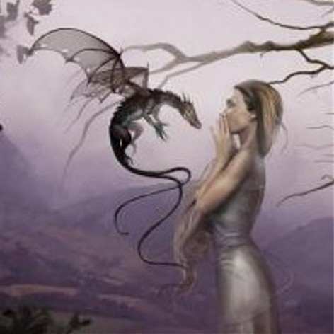

Forums galactiques > Assemblée Galactique : diplomatie officielle > Archives des présentations
Pages : 1 2 ... 24 25 26 ... 63 64
| circee Respect diplomatique : 3  12/10 ETU 13:43 | Score : 0 Détails Cher Tdiablo,
votre culture vous honore, tout comme je suis honorée du renom acquis par mes précédentes incarnations ... : ) Venez visitez mon île à l'occasion ... Je gage que vous en serez troublé ; ) Bien à vous, Circée. | ||
| Blackwarrior Respect diplomatique : 476  17/10 ETU 19:18 | Score : 0 Détails Arrive et colle un beau panneau 'UP' sur le mur, aux côté de tous les autres ...
raaa il faut de plus en plus de panneaux pour que cette salle reste à flots !! c'est au moins le ... 5eme !! ^^ pour les fous suicidaires, rdv page 26 ;) | ||
| ZeühlWGigantomachie Respect diplomatique : 13 18/10 ETU 16:12 | Score : 10 Détails Après ce long voyage de basculement et de transsubstantiation de plan d'existence, traversant et transcendant les époques et les temps Immémoriaux, la Zeühl est à présent parmi vous...
Après avoir parcouru des périodes sacrées, des guerres colossales et abjectes (La Titanomachie, La Guerre du Peloponèse...). Après avoir fait des rencontres illuminées et spirituelles avec Chaos, Gaïa, Ouranos. Avec l'Amour, la Haine et la Musique Zeühlienne originelle. Après un passge à Tartare et à Asphodèles. La Zeuhl Wortz Kosmic s'est perdue, évanouie à cause de cet odyssée demandant de l'energie à outrance... Elle s'est donc éteinte laissant la place à une forme évoluée d'elle-même, la ZeühlWGigantomachie. Existence supérieur rechechée anciennement par la Zeuhl Wortz Kosmic. Elle y est parvenu a posteriori et consécutivement à de nombreuses heures de pratique Musicale Transcendentale et de dialogue exeptionnel, qui les ont menés à des époques, et en des temps les plus lointains de l'humanité, l'immaturité et la droïdinité et cependant en des temps plus proche de la création du Cosmos et de la matière... Cette expérience a donc changé ces Cinq hommes devenu un seul être de pierre Mystique, que certains Commandants actuels ont pu croiser ou rencontrer à l'Assemblée Galactique Contemporaine il y a peu de temps finalement... C'est donc ainsi que ces Cinq anciens Combattants fusionnés dans une seule âme entrèrent dans la salle des Archives de présentation et annoçèrent leur retour, ou plutot leur arrivée... Ils repartirent sur Köbaïa pour tout recommencer de zéros et mettre en application tout ce qu'ils ont apprendre durant ce voyage. Nous proposons ou demandont aux âmes solidaires un échange culturelle, spirituelle contre une contrepartie de matière première et secondaire... Cette application sera longue et surment difficile mais pour Espérence ! | ||
| Sergent Ashära Respect diplomatique : 4  18/10 ETU 16:17 | Score : 4 Détails Bonjour je suis la Commandante Ashära , Sergent de mon réseau d'espion.
Je viens d'une planète lointaine nommé Fire World , où le reigne est imposé par l'Impératrice Kendra , qui est un dragon ,et moi-même je suis sa fille unique. Je vis dans un monde de feu ou seule ma race peut pénétrer car il y fait une température habituelle de 500°C environ.Donc si il vous prend l'envie de visiter ma planète nous vous fournirons l'équipement approprier pour résister à cette température. Sur ceux je vous laisse chers commandants. Aurevoir | ||
| Angus Young Respect diplomatique : 419  18/10 ETU 19:16 | Score : 1 Détails ÄLLÈLÛJÄH!!!!!!
Enfin, après plus d'un mois d'absence, les combattants de la Zeuhl revennaient. Angus avait pleuré de joie deux fois seulement ces dernières années : le jour ou les combattants de la Zeuhl Wortz Kosmic avaient atteint le stade ultime de spiritualité, et aujourd'hui, jour ou enfin ils revennaient pour ne former plus qu'un. Un détail le tracassait cependant... Les esprits, aussi purs soient-ils, peuvent-ils jouer de la musique, et continuer a vibrer avec elle? Il aurait la réponse bientôt... | ||
| ZeühlWGigantomachie Respect diplomatique : 13 19/10 ETU 14:32 | Score : 3 Détails La ZWG repassée par hasard dans la salle des Archives de présentation est vit une petite note signée "Angus Young" a coté du texte annonçant son "retour". elle prit donc par conséquent un de ces plus belles plumes et lui répondit (Et oui, ZWG avait perdu depuis un bon moment son X-COM...) :
" Stylobate! Crépis mutules derant in antis dorien fabouladi tuyog' popitu caladrakhh sinouil hermere ody ca Séeeh Lih dadho dodécanone pré quoueth jobi....Darfot kputos fog hundin Wöl kalamera Handeranera sintugh benako fugio adagio bellissimo piroutek nuh jectera dera vitera. SimmhjaketeraZeühl !KÖbaïa ïss Dëh Hündïn !" Le traducteur embauché depuis la mutation arriva en courant, prit la feuille de note et traduit cette nouvelle langue qu'avait adopté ZWG spontanement, durant son voyage, comme don des dieux et comme Universelle. On pouvait lire : "Hür! Les esprits auxquelles tu fais référence sont surment les Cinq êtres de l'ancienne Zeuhl Wortz K. Maintenant c'est moiqui les réunit en une seul entitée spirituelle de Pierre Mystique...Cependant tu oses me demander si je pratique tjrs cette musique celeste qui est la Zeühl..?! Evidement et encore plus que jamais, j'ai ramenais de mon vayage des techniques de Luterie appris aux coté de la famille AMAti, et des instruments des plus fin produisant un son aussi pure que les oreilles mal préparées ne l'entendent pas... Par conséquent nous pourrions tjrs "boeufer" comme "au bon vieux temps" sur cette magnifique planète du nom de KÖbaïa. A bientôt, Zeühl !KÖbaïa ïss Dëh Hündïn !" | ||
| Strüdel Respect diplomatique : 222  20/10 ETU 18:10 | Score : 11 Détails Un grand personnage humanoïde fit son apparition dans la salle. Il était vert. Il était poilu. Il était visqueux.
Bref, il était moche et repoussant. Ses yeux sans la moindre lueur d'intelligence ne brillaient pas, et n'étaient pas beaux, ni attendrissants, ni rassurants. Ses bras, d'une longueur pour le moins ridicule par rapport au reste de son corps, ne virevoltaient pas avec une grâce incomparable quand il marchait. Ses jambes, tordues, bosselées, et non moins poilues que le reste de son corps, n'avaient pas la finesse de celles des techno-yaks de Xultraö. De plus, sa démarche n'était pas chaloupée, et ne pouvait pas être qualifiée avec un quelconque adjectif évoquant quelque chose de positif. Cet être n'avait donc pas la moindre raison d'être heureux, et n'avait au premier coup d'oeil aucune raison de prolonger sa vie plus longtemps. Et pourtant... Pourtant, il souriait de toutes ses dents (qui n'étaient pas blanches, ni éclatantes de fraîcheur). Il rayonnait d'un bonheur difficilement accessible pour la plupart des êtres vivants, mis à part peut-être les Tragognes de Laqt, dont on avait encore pas réussi à déterminer si elles étaient vraiment heureuses, ou si le sourire stupide de leur visage était simplement dû à une mutation de l'espèce. Ce personnage - donc - était heureux, et commença à parler lorsqu'il fut arrivé approximativement au centre de la pièce. -Bonjour les âmis! Je voudrais bien être votre âmi câr je n'ai pâs beaucoup d'âmis pâr ici, et j'aime bien avoir plein d'âmis. Je suis gentil avec mes âmis. Dès qu'il eut fini de parler, un grésillement se fit entendre, et une voix mécanique venant du crâne de la créature commenca à parler. -Commandants, je vous salue. Je suis Strüdel, gourou du peuple Choucre, de la planète Choucroute. Notre peuple vient juste de se connecter au réseau radio galactique, après une longue période de chaos sur notre planète. Comme je ne parle pas votre langue, un traducteur automatique s'occupera de vous exprimer mes propos en langage galactique. Mon peuple tient à vous annoncer son vif désir de se développer dans cette galaxie le plus rapidement possible. Aussi, nous aimerions prendre contact avec quelques commandants capables de nous expliquer la situation galactique actuelle, très rapidement, afin de pouvoir consulter les archives galactiques en connaissance de cause. Si certains commandants sont prêts à devenir nos âmis, merci de nous le faire savoir par X-Com. La créature était tellement heureuse que tout le monde l'écoute qu'elle pleurait à présent à chaudes larmes. Mais ne vous y trompez pas, ce n'était ni attendrissant, ni amusant. C'était répugnant. -Bouhouhouhouhou!!! Je veux plein d'âmis! Je vous aime, devenez mes âmis, s'il vous plaît. -Je vous remercie de m'avoir porté autant d'attention, et vous souhaite une bonne continuation. Et la créature s'en fut. Ce n'était pas triste, ni dommage. C'était un soulagement. | ||
| Arkkrad Respect diplomatique : 118  21/10 ETU 05:44 | Score : 1 Détails Bonsoir commandants,
Je me pressente comme le veut la coutume. Je me nomme arkkrad, ancien disciple de l’école de ninjutsu iga ayant été fondée durant la préhistoire (quelques maîtres perpétuèrent la tradition ancestrale jusqu'à notre ère dans le plus grand secret) j’ai consacré ma vie entière a l’apprentissage de techniques de combat, a l’assassinat, la dissimulation, l’espionnage, la prestidigitation, le maniement de technologies explosives, etc. Tout comme mes frères d’arme, je n’étais qu’un pantin destinée à servir mon maître et ses employeurs. Mon destin était tout tracé, vivre pour tuer, et mourir lorsque que je serai devenu inutile. Mais voila, mon sensei est mort prématurément il y a peu, les Shinobi devenus rônins (si je puis dire) commencèrent a s’entretuer et le clan fut plongé dans le chaos le plus total. C’est alors que je me décidait de partir dans des contrées lointaines pour voler de mes propres ailles. Quelques années passèrent et je me retrouve ici, devant vous, a vous raconter mon histoire… Je suis aujourd’hui un jeune commandant parmit tant d'autres qui tente de se faire une place dans la galaxie. | ||
| Corbeau noir Respect diplomatique : 1010  21/10 ETU 08:56  | Score : 2 Détails Corbeau était content... Depuis qu'il avait perdu le contact avec la civilisation, il n'avait pas vus autant de commandants réunis en un seul lien. Il était apparement coutume de laisser un message de présentations à l'attention des autres. Il s'empressat d'aller chercher un de ces petits papiers et marquat :
"Commandants, Cela faisait bien longtemps que je ne m'étais pas rendus dans l'Assemblée intergalactique et c'est avec la joie au coeur que j'y reviens. J'espère que nous ne croiserons pas le fer ensemble ce qui serait fort regrettable car cela risquerait de détruire la paix fragile que nous venons de créer. Si jamais vous désirez des renseignements ou n'importe quoi d'autres, n'hésitez pas à m'en faire part. Amicalement et cordialement Corbeau noir" | ||
| Gemnoth-Sinn Respect diplomatique : 358  23/10 ETU 17:32 | Score : 0 Détails Up(Au cas où, sait-on jamais).
| ||
| Aïsarius Respect diplomatique : 6  27/10 ETU 19:53 | Score : 5 Détails Arriva un homme tout de rouge vétu, les épaules larges et la tête haute. Cet homme apparament d'une trentaine d'année avait néanmoins la totalité de sa chevelure grise.
Il s'avança encore et commença son élocution. Commandants, Empereurs, Commandeurs d'Espérance, Je viens me présenter à vous bien humblement. Aïsarius, fils de Fuming-Joe et Shanaa. Mon père venant de mourir, je me retrouve à la tête de son (tout) petit empire. Si la vie de mon père m'a m'enseigné quelque chose c'est bien que la passivité, l'innactivité, et l'isolement tue plus vite que le devouement et l'action. Et en ces temps troublés, je viens jurer devant vous, père et fils d'Espérance ma loyauté à la République et à ses dignes représentants. Vous devez avoir des plans d'actions à mettre en route et des flottes à revoir, alors je ne vous prendrai pas plus de temps. Chers Comtemporains, que vive la République et qu'Espérance ne soit pas qu'une abstraction ! Il comptempla ce qu'il espérait être l'avenir, fuyant les regards de certains, et alla s'assoir dans un coin de la salle, humblement mais toujours aussi droit. | ||
| -[Aerÿnn]- Respect diplomatique : 2661  02/11 ETU 21:23 | Score : 2 Détails Un nain-connu entra, une affiche à la main, après la pose de celle-ci, il disparût comme il était venu. Zouu...
"Oyé Oyé... Commandants, Commandantes, Jeunes (vieux ? oui, il y en a !) Femmes, Hommes, Créatures, Démons, Robots, Nains, Elfes, Trucs qu'on ne sait pas décrire... Prenez votre courage à deux mains et venez vous présenter. Comme vous le sentez. Nous ne mordons pas. Allez, on respire un bon coup... Et on fonce. Bienvenue !" PS : Pas la peine de voter... pour une affiche. C'est ridicule. | ||
| Cassenoisettes Respect diplomatique : 9  03/11 ETU 17:35 | Score : 9 Détails Une sorte de petit écureuil arriva dans la salle. Il était fier, l'oeil vif, le poil ras, les griffes impeccablement coupés et sa queue se dandinait de droite à gauche. Il ne marchait pas mais sautillait.
Il prit un air jovial et s'adressa à l'assemblée. " Tout d'abord bonjour, je suis Queue toufue du peuple des Cassenoisettes. Je suis heureux de pouvoir vous parler. Mon peuple a découvert récemment oun invasion extraordinaire qui me permet de communiquer avec vous ence moment". "euh non je voulait dire invation...invention! oui invention!!! Mon traducteur n'est pas très au point". "Vous n'avez rien à craindre de nous. Nous sommes un peuple très pacifique. Notre préoccupation est seulement d'étendre notre foret de noisetier partout à travers la galaxie de n'importe quelle manière que se soit". "Merci de votre attention, nous vous contacterons pour vous fournir les meilleurs espèces d'arbres et les plus adaptés à votre environnement. Nous vous ferons un prix très raisonnable". L'écureuil se frottant les mains quitta l'assemblée avec oun lueur maléfique dans les yeux. | ||
| Horohoro Respect diplomatique : 1130  03/11 ETU 17:40 | Score : 0 Détails Bienvenue parmis nous,monsieur le cassenoisettes!
Je vous souhaite paix et prospérité. (Quoique,pour la paix,ici c'est pas gagné...) Si vous avez besoin de quelque chose,d'un renseignement ou autre,n'hésitez pas à me contacter! pour bien commencer,je vous conseille de rejoindre une coalition! Parmis les meillleures pour les nouveaux,je vous conseille l'ASBL premier pas, l'académie, ou encore l'Ordre du Clair Obscur,dont je fais moi-même partie! Longue vie à vous! (HRP:Ne vous ai-je pas deja croisé en G1?) | ||
| Attila Respect diplomatique : 6  04/11 ETU 21:24 | Score : 3 Détails Bonsoir Commandants,
Je me nomme Attila. Afin de couper court à toutes rapides allusions, c'est le seul point commun que j'ai avec ce lointain mais néanmoins Habile guerrier. J'espère que mon passage parmi vous sera productif pour vous comme pour moi. En vous souhaitant une aussi belle soirée que le coucher de soleil miroitant dans l'eau du lac de Ashzara, Je vous dis à très bientôt, Attila. | ||
| César Respect diplomatique : 14  05/11 ETU 11:34 | Score : 4 Détails Bonjour a tous et a toutes.
Je suis César commandant dans Espérance. Je suis un noble marchand et acheteurs. Je suis ici pour un séjour trés long. Je suis a la disposition de tous et toutes. Je suis pas trés fort mais s'est normale je viend de commanser le jeu alors je voudrai poser une question a tous les joueurs de Esperence. Comment fait-t-on pour faire des textes en couleur ? Merci et bon jeu. | ||
| César Respect diplomatique : 14 05/11 ETU 11:54 | Score : 0 Détails merci a tous se qui mon aidé
| ||
| Llor Respect diplomatique : 599  08/11 ETU 14:30 | Score : 3 Détails Une jeune dragonne dorée s'avança au milieu de l'assemblée. Nul encore ne l'avait vu, ni entendu et elle sentait l'attention se portait sur elle avec intensité. Depuis la séparation de son peuple du reste des dragons, peu d'êtres vivants n'avaient eu de relations avec les dragons dorés. Leur retour pouvait laisser tout entendre.
D'une voie claire et mélodieuse, la jeune dragonne déclama : " Commandants et dirigeants d'Espérance, Je suis Llor, représentante des dragons dorés d'Espérance. Depuis des siècles, notre peuple s'est isolé dans les marges extérieures de la galaxie pour vivre dans l'harmonie et la Paix. Mais jamais nous n'avons cessé de vous observer et de vous aimer. Alors que vous traversez une phase des plus critiques, à l'aube de grands bouleversements, nous ne pouvions pas ne pas être à vos cotés. Nous le faisons avec d'autant plus de joie car, alors que des menaces pèsent, une nouvelle voie porteuse d'amour s'exprime dans cette assemblée et cette Galaxie. Jusqu'à présent, nos besoins étaient assurés par notre planète mais notre retour noud amène en entreprendre d'autres projets et nosus erons heureux de pouvoir bénéficier de vos soutiens. Merci à tous de votre attention | ||
| Albert Simon Respect diplomatique : 1777 08/11 ETU 15:28 | Score : 1 Détails Bienvenue madame la dragonne,
Je connais quelqu'un du coté du zero qui doit fretiller d'aise de vous savoir parmi nous ^^ | ||
| Némésis Respect diplomatique : 1252  08/11 ETU 15:30 | Score : 0 Détails /*/*/*/*/*/
... il s'agissait du ... Père-Dragon ... membre de l'AMG ... /*/*/*/*/*/ |
Pages : 1 2 ... 24 25 26 ... 63 64
Forums galactiques > Assemblée Galactique : diplomatie officielle > Archives des présentations